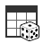
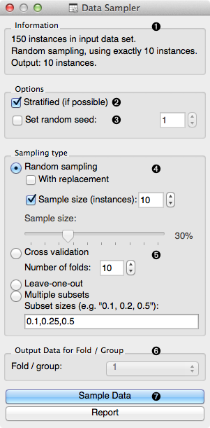
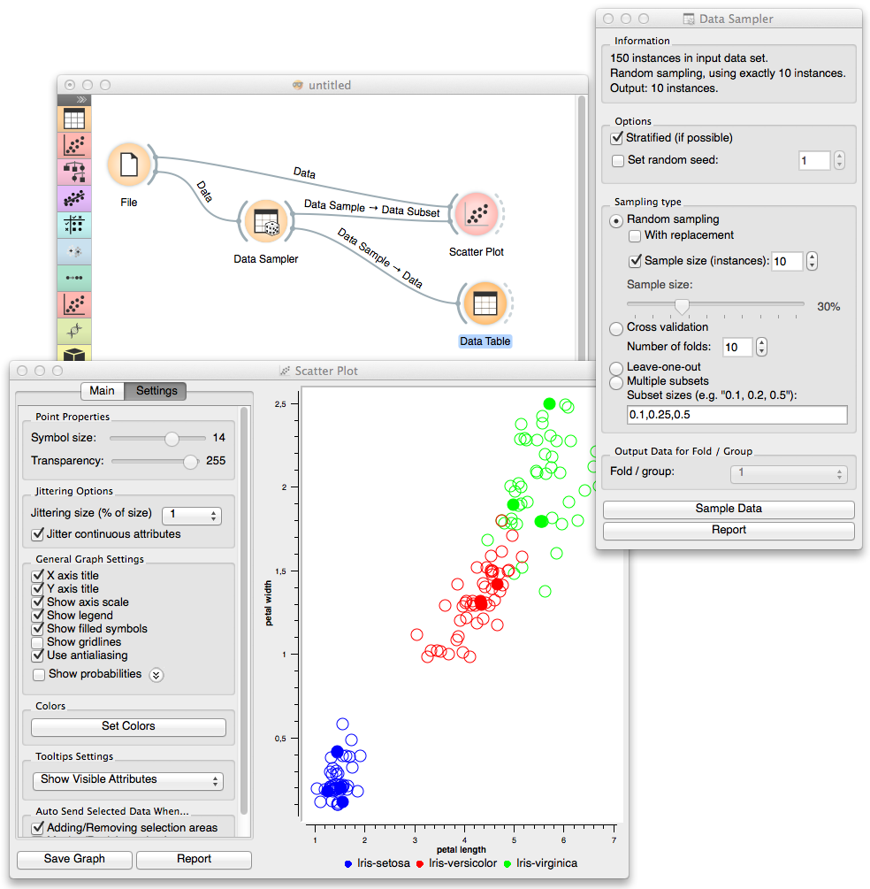

This is documentation for Orange 2.7. For the latest documentation, see Orange 3.
Data Sampler¶
Selects a subset of data instances from the input data set.
Signals¶
- Inputs:
- Data
Input data set to be sampled.
- Outputs:
- Data Sample
A set of sampled data instances.
- Remaining Data
All other data instances from input data set that are not included in the sample.
Description¶
Data Sampler implements several means of sampling of the data from the input channel. It outputs the sampled data set and complementary data set (with instances from the input set that are not included in the sampled data set). Output is set when the input data set is provided and after Sample Data is pressed.
- Info on input and output data set.
- If input data contains a class, sampling will try to match its class distribution in the output data sets.
- Set random seed to always obtain the same sample given a choice of data set and sampling parameters.
- Random sampling can draw a fixed number of instances or create a data set with a size set as a proportion of instances from the input data set. In repeated sampling, an data instance may be included in a sampled data several times (like in bootstrap).
- Cross validation, Leave-one-out or sampling that creates Multiple subsets of preset sample sizes relative to the input data set (like random sampling) all create several data samples. Cross validation would split the data to equally-sized subsets (Number of folds), and consider one of these as a sample. Leave-one-out randomly chooses one data instance; all other instances go to Remaining Data channel. Multiple subsets can create subset of different sizes.
- For sampling methods that create different data subsets, this determines which subset is pushed to the Data Sample channel.
- Press Sample Data to push the sample to the output channel of the widget.

Example¶
In the following workflow Schema where we have sampled 10 data instances from Iris data set and send original data and the sample to Scatterplot widget. Sampled data instances are plotted with filled circles.
